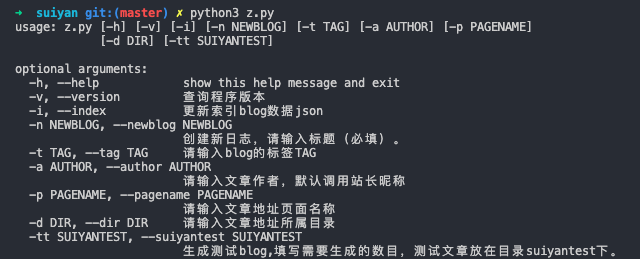

前端项目构建打包的一些学习笔记
作者:J.sky 发布时间:2020-01-01 21:09:54 Tag:
JavaScript
遇到的问题
由于项目总是有一些小BUG，回想了一下项目中的JS文件的组织问题，估计应该是JS文件分散造成的加载不稳定，有时会造成一些变量莫名的未定义，事已至此，只有将这些文件打包到一个文件中就可以很好的解决这个问题，但是今天在网上搜了一些都是最近流行的打包工具，感觉功能过于丰富，以当前的项目来说用这些流行的打包工具有些大材小用了，而且学习成本高了一些，后来看了一下手头上的两JavaScript本书都推荐Ant打包，所以决定按书上的来吧，省时省力。
项目目录结构
书上说项目主要有三个目录：
bulid用来放置最终构建的文件，理想情况下这个目录不应该提交src用来存放所有的源文件，包括用来进行文件分组的子目录test测试文件。
Ant打包
ant的安装教程很多，这里就不在重复了。
前端构建需要明白自己要做的是什么，其实打包构建的工具很多的，但是有些打包工具的功能太多了，学习成本很大的，所以选择适合的工具也是很重要的。
ant通过配置build.xml来执行一系列target,任务的类型选择很多，依据目前项目的选择，有打包，校验，压缩等。
这里就不在贴代码了，具体可以查看suiyan根目录下的build.xml参考，网上的教程也很多的。
config.json详细说明
作者:J.sky 发布时间:2019-12-31 13:35:18 Tag:
碎言博客
config.json 详解
- blog_name : 博客名称
- blog_author : 站长昵称
- blog_description : 站长简介
- meta_description : meta
- meta_keywords : meta keys
- profile_image : 站长头像
- blog_sns : SNS分享
- nav : 博客导航
- blog_list : 首页加载博文篇数
SNS中的ico图标采用的font-awesome-4.07，图标搜索地址如下：http://www.fontawesome.com.cn/faicons/,只需填写图标名称即可。
细说修改碎言博客站点的样式
作者:J.sky 发布时间:2019-12-30 20:15:29 Tag:
碎言博客
碎言博客HTML结构
博客HTML只有4个：
- index.html 博客首页
- archives.html 归档
- tags.html 标签页
- p.html 博文详情页
CSS修改
碎言博客CSS前端采用的bootstrap4框架，CSS样式修改采用了less本地修改生成的.css文件。这里推荐一个vscode插件:Easy LESS

这个插件的特点就是在相同目录下可以生成一个同名的.CSS文件，配合less的引用命令@import "theme-dark-1.less";使用起来很方便的。
博客的样式修改
碎言博客的样式主要集中在<link id="blogcss">标签连接的CSS，通过修改对应的LESS文件中对应的颜色变量，可以快速的修改博客的颜色及相关样式，变量我都有注释。
Markdown代码样式
Markdown代码样式通过修改<link id="highlight">标签连接的highlightCSS来修改，在https://suiyan.cc/assets/plugins/highlight/styles下可以选择自己喜欢的样式。
进阶修改
觉得手动修改站点样式太麻烦？可以利用jQuery在站点上添加在线改变站点样式的浮动按钮，近期会考录添加的碎言博客的。
碎言博客终端操作详解
作者:J.sky 发布时间:2019-12-30 15:56:49 Tag:
碎言博客
关于z.py
z.py是碎言博客构建索引的关键程序，采用Python3相关技术开发。
终端运行： python3 z.py

即可看到相关的命令帮助。
-i
python3 z.py -i
每次创建完新文章后都会自动创建索引，若是修改了文章的标题，作者，标签，时间等头部信息后，应该运行此命令进行索引更新。
-n
python3 z.py -n 这里写你的新文章的标题名称
-n用来创建新文章，其中还有几个选项可以使用，其中-n后边必须跟随一个新标题。-
-d用来创建一个存放的目录python3 z.py -n blog_title -d blog
会在默认.md存放目录articles下创建一个blog目录，新文章就创建在这里。
-
-t -a -p分别对应标签，作者和文章地址页面名称。作者留空默认填充为博客站长昵称。 -
-v显示当前程序的版本。 -
-tt参数为int，此命令用来生成测试blog,填写需要生成的数目，测试文章放在目录suiyantest下。